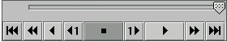

What is meiosis?
It's the formation of gametes from sex cells, each gamete carrying one half the chromosomes from a parent. When it joins with another gamete from the other parents, that process is called fertilization, and a new offspring is created. The Meiosis Practice Session allows you to create offspring, one at a time, from two different parents.
Using the Meiosis Tools:
1. To run meiosis you can use the forward and back buttons, as well as the slider.

2. To zoom in and out on the gametes, use the magnifying glass.
Plus lets you see
allele labels.
Minus returns you to normal.
3. While using the magnification setting, you can move the chromosomes within a gamete to examine them more clearly.
4. To control alignment, select "controlled." This will change alignment from
"automatic," which is the default. Run meiosis using the forward or
back buttons. Click the
on the arrows between chromosome pairs to change alignment. Continue
with meiosis.
Making Babies:
1. Since meiosis is a random process, to get baby with the characteristics you want, you may need several tries before the right chromosomes segregate together to give you the necessary combination of alleles.
2. If you want a different set of chromosomes from what you first get, click on "reset" in the normal view and start meiosis again.
3. Once you get the the combinations you need, click the gametes you want to use. Then use the arrows to move them into the central fertilzation window.
4. To fertilize, use the forward button or slider below the offspring window.
5. After fertilization, you have a baby!